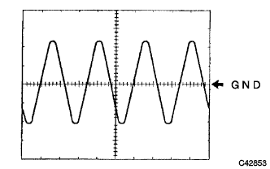

DTC C1235/35 Speed Sensor FR Iron Wins |
DTC C1236/36 Speed Sensor FL Iron Pacific |
DTC C1238/38 Speed Sensor RR Iron Work |
DTC C1239/39 Speed Sensor RL Iron Pacific |
| DTC No. | DTC detection conditions | DTC output -related items |
|---|---|---|
| C1235/35 C1236/36 C1238/38 C1239/39 | Pulse waveform abnormal state of speed sensor signal continues for 5 seconds or more at 20km / h or more. |
|
| Step 1 | Speed sensor output waveform inspection |
 |
Using an oscilloscope, brake actuator wire 31 (FR +) ← → 30 (FR-) terminals, 9 (FL +) ← → 8 (FL-) Between terminals or 33 (RR +) ← → 34 (RR-) terminalsCheck the waveform between the between and 11 (RL +) ← → 12 (RL-) terminals.
|  |
Osciroscope waveform
Give a light vibration by spraying a connector and harness, and checking that the waveform does not change.
| A | OK |
| B | NG (waveform abnormality, the waveform changes when giving vibration) |
| C | NG (waveform abnormality, waveform does not change when giving vibration) [Rear sensor] |
| D | NG (waveform abnormality, waveform does not change when giving vibration) [Front sensor] |
|
| ||||
|
| ||||
|
| ||||
| A | |
| Step 2 | DTC reconfirmation |
Erase the diagnostic cord.
The IG switch is turned off → ON, and the vehicle speed is 20 km / h or more, and the ABS Warnin Grand lamp turns off.
If the ABS Warnin Grand lamp is a regular light, check the diagnostic cord.
| A | normal |
| B | Abnormal code |
|
| ||||
| A | ||
| ||
| Step 3 | Speed sensor inspection |
Remove the speed sensor of the corresponding wheel and check that there is no attachment and damage of foreign substances at the tip.
|
| ||||
| NG | ||
| ||
| Step 4 | Sensor rotor cleaning or replacement |
Remove the skid control sensor and clean the speed sensor rotor of the rear axle hub.
| ||